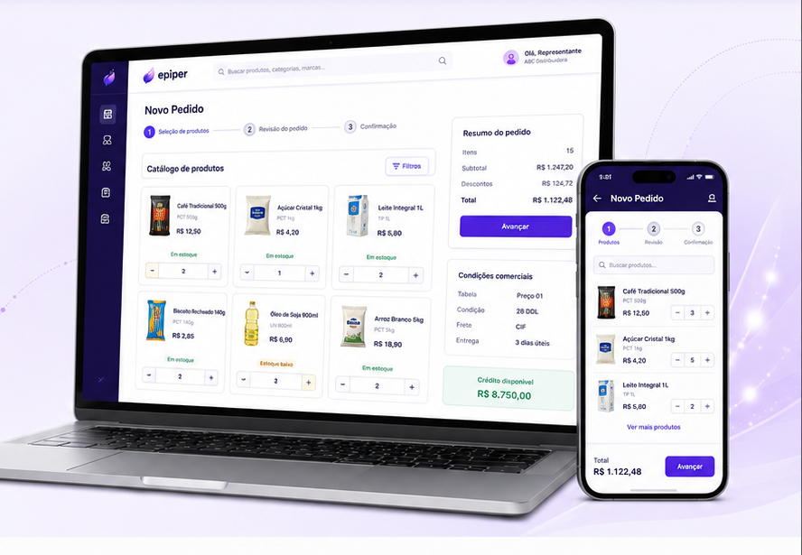
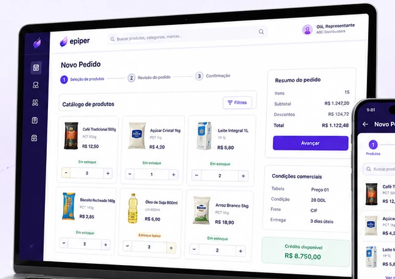

Acesse o canal
Cliente, vendedor ou representante entra no Pedido Eletrônico.
O Pedido Eletrônico da Epiper reúne catálogo, preço, estoque, condições comerciais e acompanhamento em um canal B2B conectado ao ERP.

O usuário trabalha em uma experiência digital e o pedido continua respeitando a estrutura comercial da empresa.
Cliente, vendedor ou representante entra no Pedido Eletrônico.
Produtos, preço, estoque e condições aparecem no fluxo de compra.
Os itens são selecionados e o pedido é validado antes do envio.
O pedido segue para processamento e o status pode ser acompanhado.
Os principais elementos da venda ficam próximos, reduzindo consultas paralelas e retrabalho.
Produtos e informações comerciais organizados para facilitar a compra.
Consulta de preço e disponibilidade de acordo com a estrutura comercial.
Dados do cliente e condições comerciais aplicados ao pedido.
Mais clareza sobre envio, validação, processamento e retorno.
Arquitetura preparada para integração com diferentes ERPs, com destaque para o WinThor TOTVS e adaptação conforme os recursos técnicos disponíveis.
O mesmo ecossistema pode trabalhar junto da equipe interna de vendas.

A experiência fica mais simples para quem compra, enquanto regras comerciais, produtos e processamento continuam conectados à estrutura da empresa.
A proposta é criar um canal de venda moderno conectado às informações que já sustentam a operação comercial, seja em WinThor TOTVS ou em outros ERPs tecnicamente integráveis.
Apresente seu ERP, sua rotina comercial e como os pedidos chegam hoje. A Epiper avalia a melhor forma de estruturar o canal e a integração.